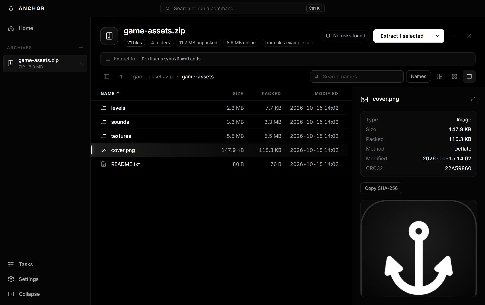
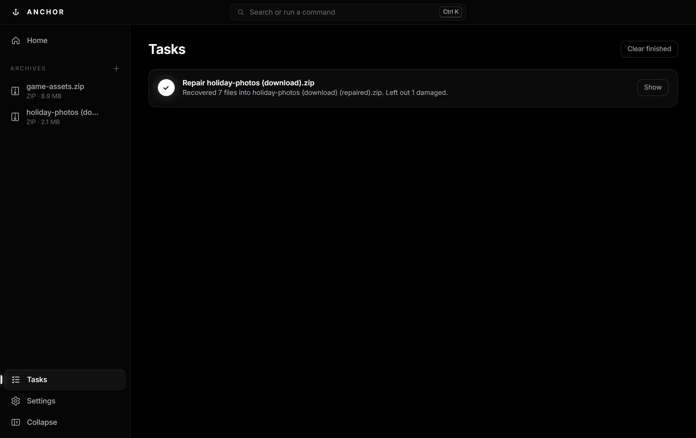
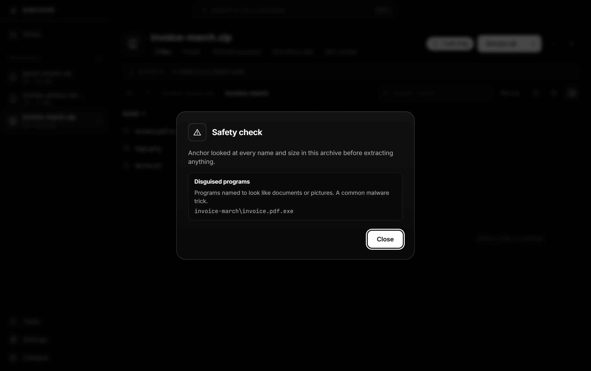

Open from a link
Paste a ZIP's web address and browse it at once. Only the files you open are downloaded.
The archive tool for Windows that opens anything, extracts faster, and fixes what is broken.
Anchor is a Windows app. Open this page on a Windows PC to download it.

Speed
Windows spends most of an extraction creating files, because antivirus checks each one. 7-Zip and WinRAR write them one at a time; Anchor decodes the archive once and writes up to 32 at the same time.
A ZIP with 4,000 small files, played back in real time.
Extraction time on one Windows PC with 24 cores; each tool extracted every archive three times into an empty folder, producing the same files, and the best time counts. Fastest in bold. Anchor is faster on archives with many files; with one or a few large files every tool waits on decompression, and 7-Zip and WinRAR are slightly faster on large 7Z and RAR files.
Features
Paste a ZIP's web address and browse it at once. Only the files you open are downloaded.
A download that stopped at 99% is rebuilt from everything still readable.
Flags disguised programs like invoice.pdf.exe, unsafe paths and zip bombs before anything touches your disk.
Files appear only when the whole extraction worked, and Undo takes them back.
Pick a stack of archives and one folder; each gets its own folder there.
Images, video, audio, PDF and text, straight from the archive. Search names or text inside files.
See what takes the space and find duplicate files, with how much they waste.
AES-256 encryption, split volumes, and 5–20% repair data so damage can be fixed later.
Right-click to extract, preview archives in Explorer's preview pane, or script it with the anchor command.


Compare
| Anchor | 7-Zip | WinRAR | |
|---|---|---|---|
| Extracts many files 2× faster | ✓ | — | — |
| Opens a ZIP from a link without downloading it all | ✓ | — | — |
| Repairs damaged ZIPs without recovery data | ✓ | — | ✓ |
| Recovery data for any archive | ✓ | — | RAR only |
| Safety check for disguised programs and zip bombs | ✓ | — | — |
| Undo an extraction | ✓ | — | — |
| Size map with duplicate files | ✓ | — | — |
| Creates RAR archives | — | — | ✓ |
| Free, with no nag screen | ✓ | ✓ | — |
Free for Windows 10 and 11. No admin rights needed, and it keeps itself up to date.
Check a download in PowerShell: Get-FileHash .\Anchor-Setup-<version>.exe and compare it with the SHA-256 above.
The installer is not code-signed yet, so Windows doesn't recognise it. Click More info, then Run anyway. Every release is built by GitHub Actions from tagged code and scanned by about 70 antivirus engines on VirusTotal.
FAQ
Yes, at home and at work. No ads, no trial, no nag screen.
No. Anchor goes online only to check GitHub for a new version when it starts (you can switch that off) and to fetch an archive you open from a link. No accounts, no tracking, no telemetry.
The warning appears because the installer isn't code-signed yet; certificates are expensive for a solo developer. Each release lists SHA-256 checksums and a VirusTotal scan link, so you can check exactly what you downloaded.
It's about 2× faster on archives with many files, which is most of them: mods, projects, photos, backups. With one or a few large files every tool waits on decompression and the results are about the same. All the measured numbers are in the Speed section.
Anchor opens and extracts RAR, but creates ZIP, 7Z, TAR.ZST and TAR.GZ. The RAR format is proprietary.
Anchor is free, closed-source software. It builds on open-source parts, credited with their licences in the app: 7-Zip (LGPL), par2cmdline (GPL) and Electron (MIT).
Not yet. Anchor is made for Windows 10 and 11 on x64 and ARM64 PCs.
Settings › Apps › Installed apps › Anchor › Uninstall. Your settings can be removed too.